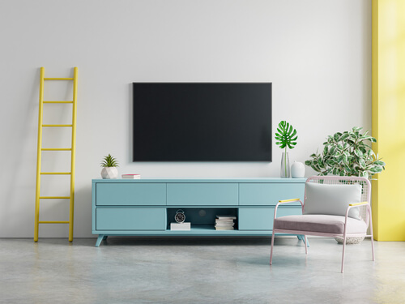
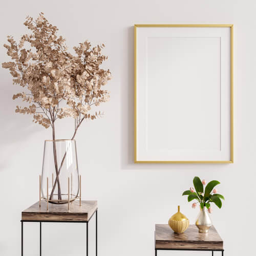

Decor Ideas
Balancing “too much” and “not enough” into a “just right” makes a huge impact on how your home feels
Your home should be an extension of you to help your guests feel at home. Your guests are a part of your life, and regardless of how long you’ve known them or how many times they’ve been to your house, they know you and your personality. They may feel most at home when your decorations are an extension of who are you. If you like color, use color! If you like monotone with accents, use it! Use personal items from you past and photos capturing memories to decorate. Allow your personality to shine through your décor so that you and your guests can relax properly.
How do you do it?
Fill available space! If you have an empty wall, throw some pictures on it, particularly of your family or friends doing something fun.
Don’t be afraid of putting up a shelf for small, important and/or decorative items. Use a combination of tall and short items for a classy and staggered appearance. Feel free to pick up a piece of furniture that has space for decorative items, such as an entertainment center where you can place not only the television set and gaming consuls, but also a vase of flowers, family photos, a small statuette, or a combination of things!
However, it is notoriously easy to go from “classy” to “cluttered”, especially if you have many prized items or photos you want to display. Ideally, for a good balance, you should be able to walk round without stepping over things or maneuvering around furniture, you should be able to see plenty of whitespace on the walls, and you should be able to see the majority of the shelves that your items are sitting on.
If you find yourself with more items than can comfortably fit, don’t worry! There are things you can do.
- Downsize
- This one can be tricky, particularly for those with multiple highly sentimental pieces. Take a moment to go through your things and decide what you want to keep what you want to donate, or what can be thrown out.
- Rotate
- If you have more items than space available, put out some of them and then place the rest in a easily accessible storage spot where you can switch them out anytime you’d like.
- Designate Areas
- Condense your items into smaller spaces, such as an album for your framed photos or a display case for your collections.